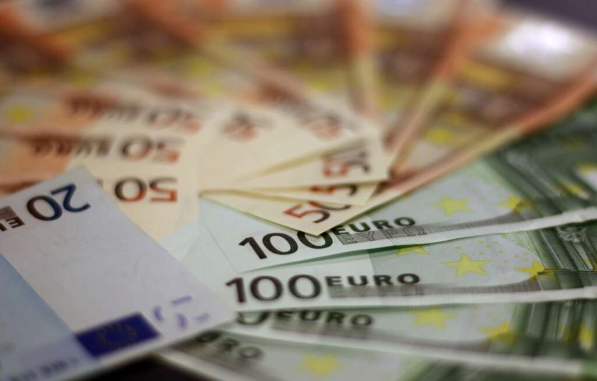

Cómo comprar letras del Tesoro: el Banco de España lo explica
Estos productos financieros tienen una rentabilidad mayor que los depósitos y carecen de riesgos por tener el aval del Estado
Las imágenes de las colas de personas esperando bajo el frío para comprar Letras del Tesoro sorprendió a toda España. Con el nulo rendimiento que dan los depósitos bancarios esta opción financiera se convirtió en una de las mejores opciones para sacar un provecho al dinero por parte de los pequeños ahorristas.
Cabe recordar que las Letras del Tesoro son títulos de deuda pública que emiten los estados para conseguir fondos rápidamente, y que serán devueltos con un interés en un plazo determinado.
No hay que confundir con los bonos del Estado. Estos son títulos de deuda con un vencimiento de tres a cinco años, donde la rentabilidad se obtiene al cobrar el cupón con el añadido de los intereses.
Cuánto cuestan las Letras del Tesoro
En el caso de las Letras del Tesoro español, cada título tiene un valor de 1.000 euros con diferentes grados de rentabilidad.
Se trata de un producto de renta fija, o sea, que el comprador ya sabe cuál será el rendimiento económico que obtendrá.
Las letras españolas se clasifican en cuatro categorías, según su vencimiento: pueden ser de tres, seis, nueve y doce meses.
Su rentabilidad, según la última subasta, es de 2,182% (la de tres meses), 2,584% (la de seis), 2,830% (la de nueve) y 2,983% (la de doce meses).
Cómo comprar las Letras del Tesoro
Su compra es muy sencilla. Se puede hacer en las delegaciones del Banco de España, a través de entidades financieras o agencias de valores, o en la web del Tesoro.
Si se hace por este portal, hay que contar con un DNI electrónico o bien el certificado digital.
En este caso, en la página web hay que buscar el apartado ‘Servicio de compra y venta de valores’.
Al abrirse una página nueva se debe ir a la parte inferior y hacer click en ‘Acceder a la aplicación’, y en la pantalla siguiente aparecerá el link que conducirá al servicio de compra y venta. Y se realiza la operación deseada.
La atracción a corto plazo
La demanda de los productos financieros a corto plazo ha atraído a los pequeños y medianos inversores.
Según el portal Estrategias de inversión se han solicitado valores por 5.797 millones de euros y se adjudicaron unos 1.532 millones.
Las razones son que ofrecen una rentabilidad mayor que la subida del euríbor y que no hay ningún riesgo, ya que tienen el aval del Estado.